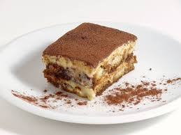

Tiramisu

Learn how to make a nearly perfect Tiramisu in just 5-6 hours
Ingredients
- 6 large Egg Yolks
- 3/4 cup White Sugar
- 2/3 cup Milk
- 1 and a quarter cups Heavy Cream
- 1/2 teaspoon Vanilla Extract
- 1 pound Mascarpone Cheese (Room Temperature)
- 1/4 cup Strong Brewed Coffee (Room Temperature)
- 2 tablespoons Rum
- 2 (3 ounce) packages Ladyfinger Cookies
- 1 tablespoon Unsweetened Cocoa Powder
Steps
- Whisk egg yolks and sugar together in a medium saucepan until well blended
- Whisk in milk and cook over medium heat, stirring constantly, until mixture comes to a boil
- Boil gently for 1 minute, then remove from the heat and allow to cool slightly
- Cover tightly and chill in the refrigerator for 1 hour
- Beat cream and vanilla in a medium bowl with an electric mixer until stiff peaks form
- Remove egg yolk mixture from the refrigerator; add mascarpone cheese and whisk until smooth
- Combine coffee and rum in a small bowl
- Split ladyfingers in half lengthwise and drizzle with the coffee mixture
- Arrange 1/2 of the soaked ladyfingers in the bottom of a 7x11-inch dish
- Spread 1/2 of the mascarpone mixture over the ladyfingers, then spread 1/2 of the whipped cream over top. Repeat layers once more
- Sprinkle cocoa powder over top
- Cover and refrigerate until set, 4 to 6 hours